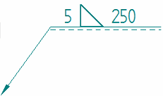
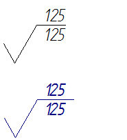

Annotation tab (Dimension Style and Dimension Properties)
Specifies display characteristics of different types of annotations and connectors. The Annotation tab is available in the Dimension Style dialog box and in the Dimension Properties dialog box.
- Datum Frame
-
Sets options for the datum frame.
- Shape
-
Specifies whether the datum frame shape is rectangular or circular.
- Dashes on datum text
-
Displays dashes in a datum frame.
Example:-A-
- Connector
-
Sets defaults for connector annotation display.
- Line type
-
Sets the line type for connectors.
- Line width
-
Specifies the line width for connectors.
- Weld Symbol
-
- Symbol line width
-
Specifies the line thickness used to draw the weld symbol annotations.
Example:

To apply the Symbol line width to PMI weld symbols, you must also select the PMI tab→Dimension group→Model Size PMI command on the ribbon.
Note:The Width option on the Lines and Coordinate tab specifies the width for the leader, reference, and tail lines associated with the weld symbol.
- Surface Texture Symbol
-
- Symbol overline extension
-
Specifies the length of the line that is extended over or under the surface texture symbol text. This option is available when editing the dimension style.
You can assign a non-zero value to ensure that the shelf line extends the full length of the annotation text.
Example:The value that you enter is multiplied by the font size. In the first surface texture symbol shown below, the length of the line is the default value, 0.0.

Look up more details
Dimension Properties dialog boxGeneral tab (Dimension Style and Dimension Properties)
Units tab (Dimension Style and Dimension Properties)
Secondary Units tab (Dimension Style and Dimension Properties)
Text tab (Dimension Style and Dimension Properties)
Lines and Coordinate tab (Dimension Style and Dimension Properties)
Spacing tab (Dimension Style and Dimension Properties)
Smart Depth tab (Dimension Style, Dimension Properties)
Terminator and Symbol tab (Dimension Style and Dimension Properties)
Feature Callout tab